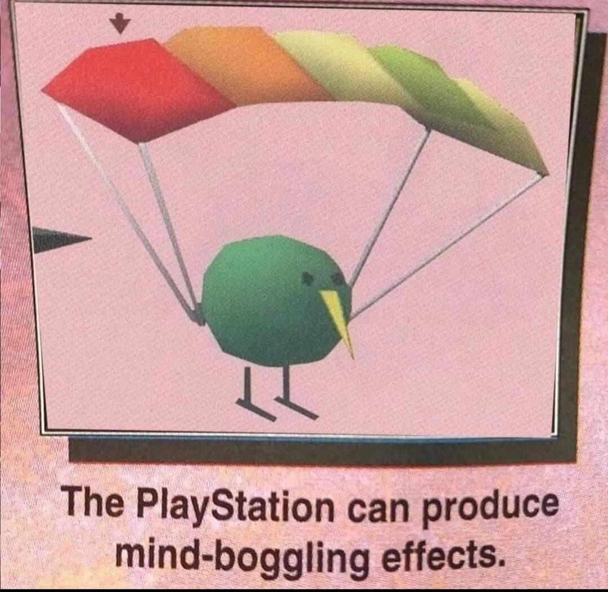

Jumping Flash is a historically very important game. It is widely considered to be one of the first true 3D platformers for home consoles ! In this game you play as a robotic rabbit named Robbit, who has to free the different landmarks of the world from Baron Aloha, a property developer who wants to use these landmarks to build private resorts.
You control Robbit from a first-person perspective. As Robbit you are equiped with a beam gun to shoot at enemies. Robbit also has the ability perform a double jump in mid air, allowing Robbit to reach platforms floating in mid air. The game is split into six worlds, all of them featuring three levels, with the last level of each world always being a boss stage.
Your goal in all of the regular stages is it, to collect all four JetPods which are scattered throughout each stage in order to advance to the next stage. You will also find an arsenal of items throughout all the stages, which you can use to defeat large hordes of enemies more easily. Each world also features a bonus stage, which you can access by jumping through a Bonus ring in a stage. Complete a bonus stage and you are rewarded with a 1-UP !
Jumping Flash acts as a spiritual successor to the game Geograph Seal, which the team behind Jumping Flash, Exact, released for the Sharp X68000 home computer in 1994, roughly a year before Jumping Flash would be released for the PS1.
When you compare these two games side by side they do look very similar, as Geograph Seal also takes place in a first person perspective and shares a similar HUD design with Jumping Flash !
As mentioned in the beginning, Jumping Flash was the first true 3D platformer released, hitting store shelves an entire year before Super Mario 64 ! And... it shows? ^^' The controls haven't really aged well. But that doesn't mean that this game is bad ! Far from it !
Jumping Flash is a super fun game ! Sure, it may not be a very long game. You can easily finish this game in one sitting. But this game paved the way for the 3D platforming genre, which definitely deserves its respect ! Also this game has a killer soundtrack !
... and Kiwi !

